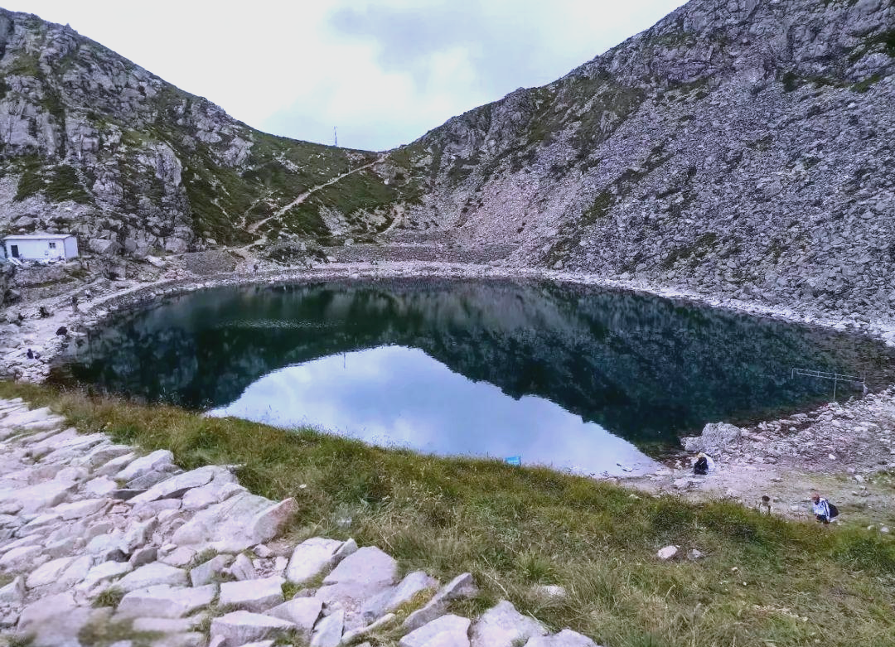
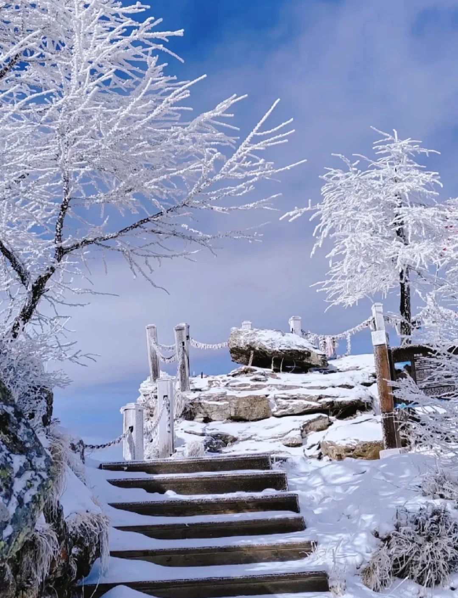
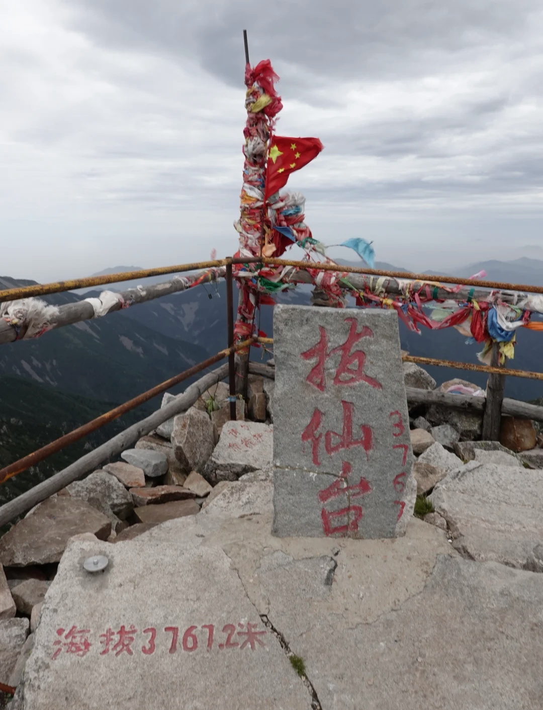
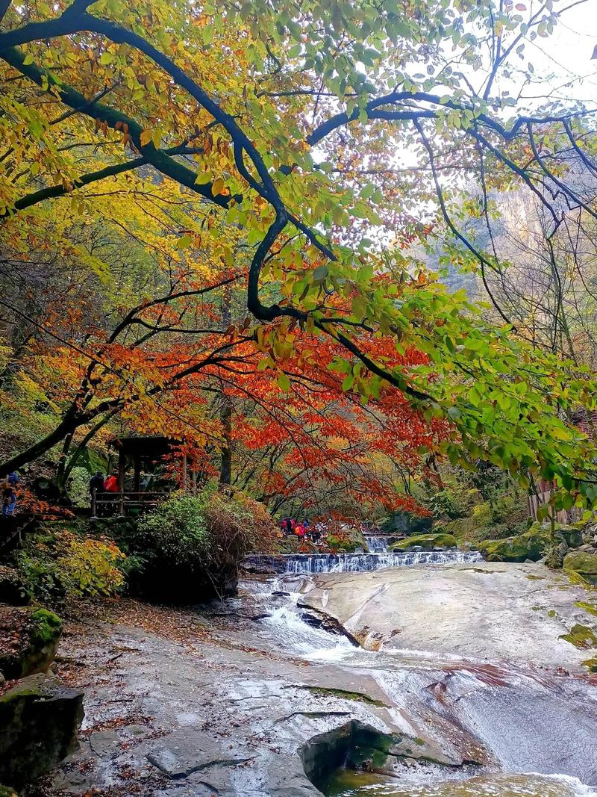
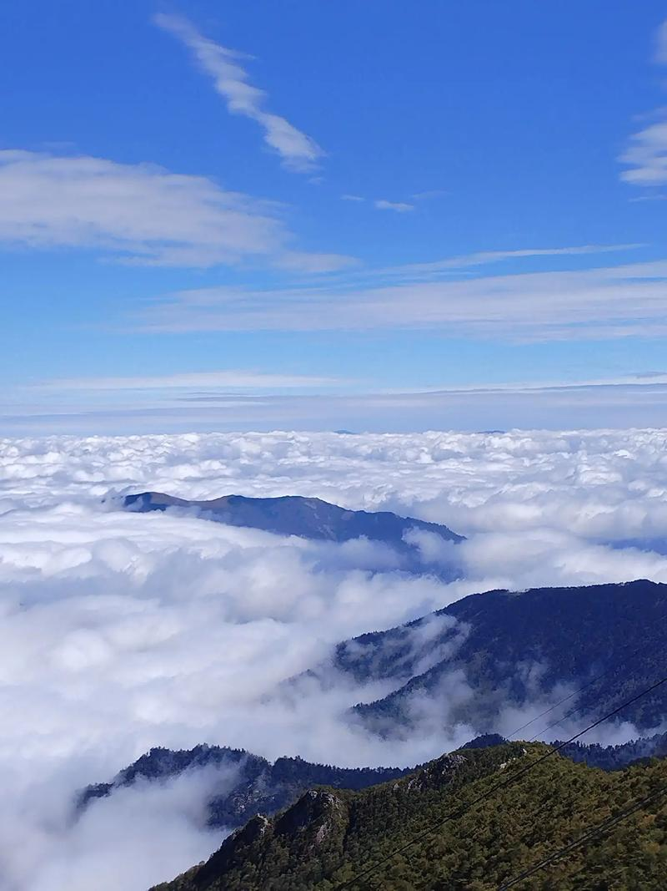

"太白积雪六月天"是陕西妇孺皆知的民谚，也是关中八景中海拔最高、气势最为磅礴的一景。太白山为秦岭山脉的主峰，拔仙台海拔3767米，是中国大陆东半部的最高点。因其山巅气温极低，积雪常年不化——即便在炎热的六月盛夏，山顶仍覆盖着皑皑白雪，与山下关中平原的滚滚热浪形成鲜明对比。古时关中人夏日南望秦岭，太白山顶一抹白色如银冠戴于群山之巅，蔚为壮观。
太白山之名由来已久。《水经注》记载："太白山，南连武功山，于诸山最为秀杰，冬夏积雪，望之皓然。"此山也是道教圣地——相传为太乙真人修炼之地，山顶拔仙台上的道观小庙，是天人相接的象征。历代诗人对太白积雪赞叹不绝：李白《登太白峰》中"举手可近月，前行若无山"，杜甫"犹瞻太白雪，喜遇武功天"，柳宗元《太白山祠堂记》等，都记录了这座作为华夏地理和精神双重坐标的雄峰。

太白山最神奇的体验是"一日历四季"——从山脚到山顶，植被垂直变化极为明显：山脚是阔叶林带（春），上行至栎林带（夏），再至桦木林带（秋），然后是针叶林带和灌木草甸带（冬），最后是高山裸岩和积雪带（极寒）。短短一天之内，从山脚的热带感走到山顶的极地感，地球上大部分的生态景观尽收眼底。
太白山是中国南北气候的分界线——秦岭—淮河一线，也是长江流域与黄河流域的分水岭。山顶的"大爷海""二爷海""三爷海"是第四纪冰川遗迹——冰川湖，碧蓝的湖水倒映着银色雪峰，其景色不逊于青藏高原的高山湖泊。登顶太白，北望是苍茫的关中平原和遥远的黄土高原，南望则是莽莽秦岭和汉江谷地——"一山分南北，登顶小天下"。
"西上太白峰，夕阳穷登攀。太白与我语，为我开天关。" —— 李白《登太白峰》




| 地址 | 宝鸡市眉县汤峪镇（太白山国家森林公园入口） |
|---|---|
| 开放时间 | 07:00 — 17:00（进山截止15:00） |
| 门票 | 旺季 100 元 / 淡季 60 元（索道另付，上索道往返约230元） |
| 交通 | 西安火车站东广场乘太白山旅游专线大巴（约2小时）；或自驾经连霍高速至太白山出口 |
| 小贴士 | 登顶拔仙台需两天行程（山上住宿条件简陋），普通游客乘"天下索道"可直达海拔3511米的天圆地方景点；山顶气温极低，六月也需备羽绒服；高反人群谨慎登山 |